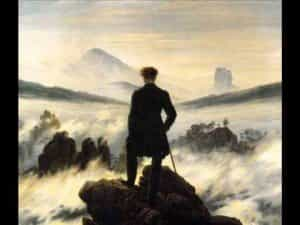

Quintus can be found at qcurtius.com. He is the author of the books On Duties, Thirty Seven, Sallust: The Conspiracy Of Catiline And The War Of Jugurtha, and other books. His work has been reviewed at Taki's Magazine. He can be followed on Twitter


Jean-Jacques Rousseau (1712-1778) is by any reasonable measure one of the most influential figures in modern philosophy. His radical ideas profoundly influenced literature, education, philosophy, religion, public morals, art, manners, and politics in the eighteenth century and far beyond.
To summarize rudely the main outlines of his thought, we can say that he celebrated feeling, emotion, sentiment, subjectivism, imagination, mysticism, nature, and romanticism. He practically founded the Romantic movement, inspired the French Revolution, and influenced many great writers, among them Goethe, Byron, Wordsworth, and Tolstoi.
His influence was due to the cyclical nature of ideas in history. Before him, for many generations, European philosophy had been lecturing everyone about rationalism and reason. Human emotions and affairs, implied Spinoza, Descartes, and Hobbes, could be reduced to geometric and mathematical categories. And this analogy had its uses.
But eventually we become tired of being reduced to mathematical abstractions.
We long to spread our Romantic wings, to celebrate our individualism, to exalt the irrational over the rational, and to go where our imaginations take us, unfettered by the constricting bonds of reason. It is only natural to want to plunge into that primeval forest of the mind, and explore its darker regions. Rousseau knew this, too, and provided a voice for the age.
Rousseau is not a favorite of mine, I have to say. With the perspective of time, we can see more clearly now how his ideas easily lent themselves to excess and frivolous abuse. Our modern age now rebels against his excesses, just as he rebelled against the excesses of what preceded him. But it is important to read things that we do not agree with.
It was for this reason that I took up his autobiography, the Confessions. There is no better way to get the measure of a man than to read him in his own words. And the Confessions do not disappoint: they are a sincere, revealing portrait of a brilliant but deeply flawed man. What comes through is the author’s sensitivity, sincerity, anger, and—it must be said—his paranoia.
At the beginning he states his purpose:
My purpose is to display to my kind a portrait in every way true to nature, and the man I shall portray will be myself…I have displayed myself as I was, as vile and despicable when my behavior was such, as good, generous, and noble when I was so. I have bared my secret soul as you yourself has seen it, Eternal Being! So let the numberless legion of my fellow men gather round me, and hear my confessions.
Who can resist this kind of soul-bearing honesty? From this point forward, Rousseau launches on a series of perceptive observations about himself and humanity, all of it backed up by practical experience. Here he relates an experience that ignited his passionate sense of honor and justice:
The course of my education was interrupted by an accident, the consequences of which have influenced the rest of my life. My father quarreled with M. Gautier, a French captain with relations on the [local political] Council. This Gautier was a braggart and a coward who, happening to bleed at the nose, revenged himself by accusing my father of having drawn his sword against him in the city. When they decided to put my father in prison, however, he insisted that, according to the law, his accuser should be arrested also; and when he failed to get his way he preferred to leave Geneva and remain abroad for the rest of his life rather than lose both liberty and honor by giving in.
Rousseau was acutely sensitive to women and their charms. But he was also supremely aware of their psychological workings. This passage, describing the unpleasant consequences of his withholding affection from a woman, clearly demonstrates this knowledge:
That privation which I had imposed on myself and which she had pretended to approve is one of those things that women do not pardon, whatever show they make of doing so; not so much on account of the resulting privation to themselves, but because it seems to imply a certain indifference to their favors.
Take the most sensible, the most philosophical, the least sensual of women: the most unpardonable crime that a man in whom she is not otherwise interested can commit is that of not possessing her when he has the chance of doing so. This rule can admit of no exception…
All in all, the Confessions are a powerful testament. His honesty is so apparent that it can be disconcerting; he frankly admits that his memory may be hazy, and that much of what he believes to be true may only be retrospective self-delusion. He never made much progress in formal education. Perhaps this fact contributed, in some way, to his rootless tendencies, his lack of discipline and moderation, and to his elevation of emotion over reason. Education is not just for the purpose of learning information; it is also meant to temper and harness the unwieldy soul of zealous youth.

The book provides a window into the soul of one of the most complicated and strange figures of modern philosophy. The record is not perfect, of course; the book’s second part is marred by tasteless criticisms of his contemporaries, and imagined conspiracies against his own character.
But this sort of thing comes with the territory. We cannot expect geniuses to be paragons of stability. Rousseau retains his place in the history of western thought precisely because of his anti-rationality.
Read More: The Many Ways Education Delays Adulthood